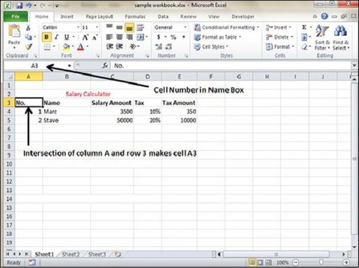

MS Excel is in tabular format consisting of rows and columns.
Row runs horizontally while Column runs vertically.
Each row is identified by row number, which runs vertically at the left side of the sheet.
Each column is identified by column header, which runs horizontally at the top of the sheet.
For MS Excel 2010, Row numbers ranges from 1 to 1048576; in total 1048576 rows, and Columns ranges from A to XFD; in total 16384 columns.
Let us see how to move to the last row or the last column.
You can go to the last row by clicking Control + Down Navigation arrow.
You can go to the last column by clicking Control + Right Navigation arrow.
The intersection of rows and columns is called cell.
Cell is identified with Combination of column header and row number.
For example − A1, A2.
